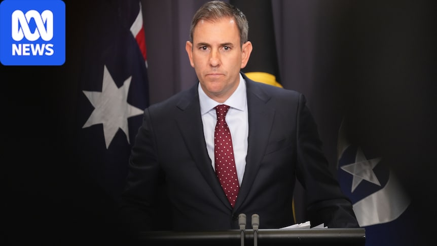
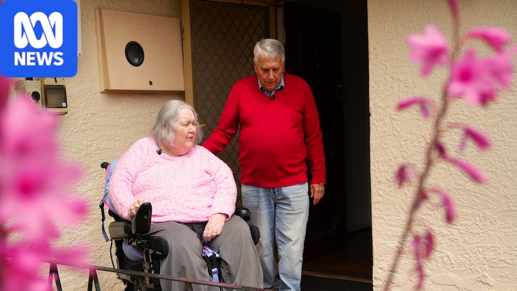
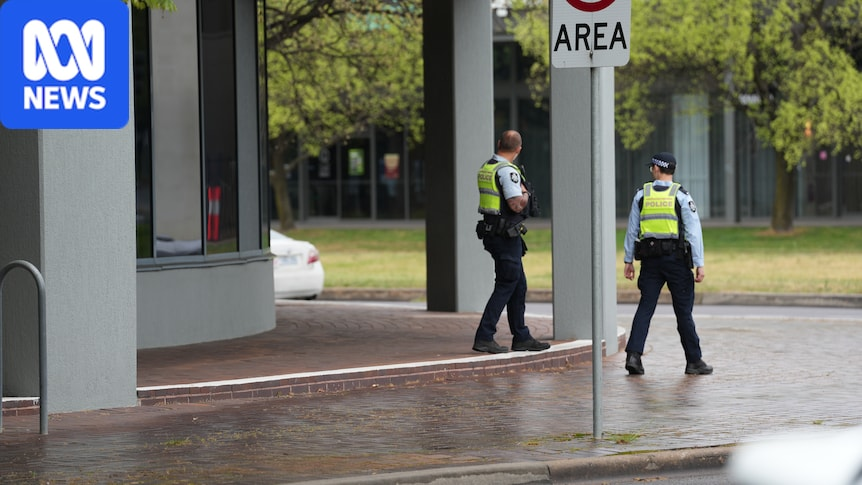

MARKET CONNECTION
Where this story enters the view
This story contributes to the current source set without a dedicated sector attribution.
SOURCE 004
MARKET CONNECTION
This story contributes to the current source set without a dedicated sector attribution.
MORE REPORTING


